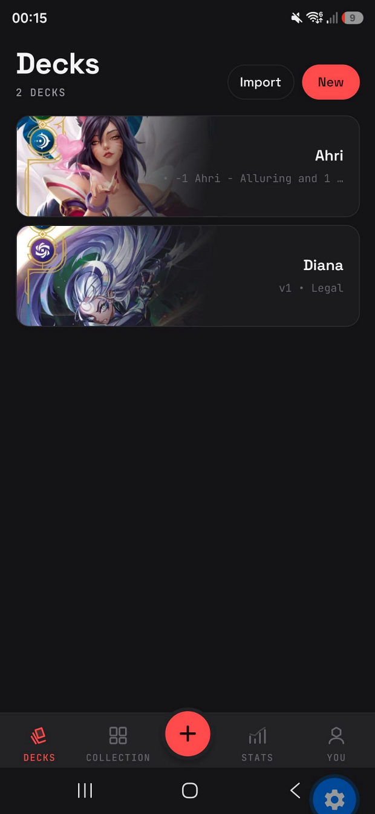
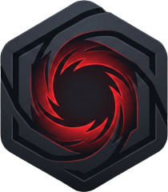
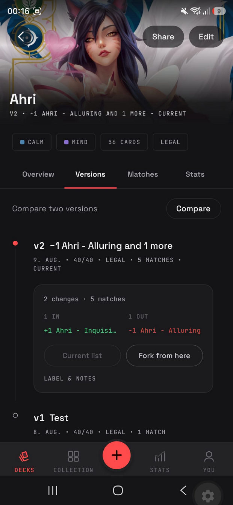
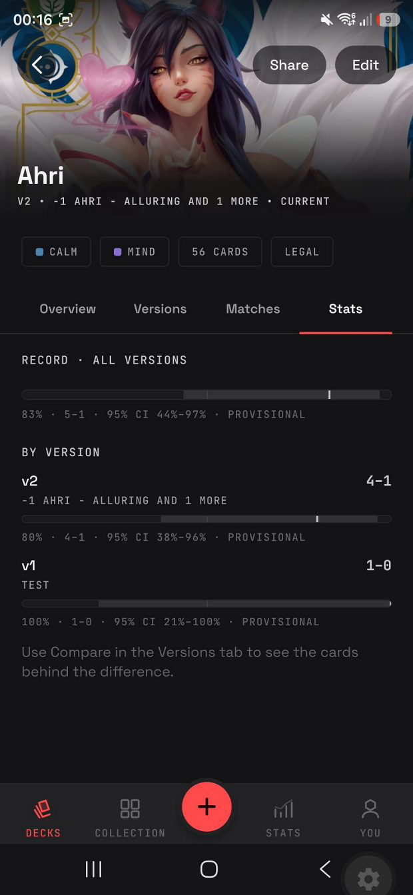
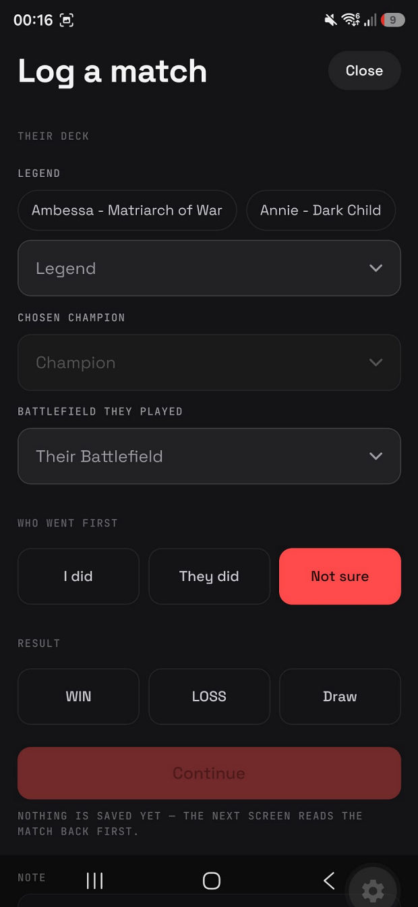
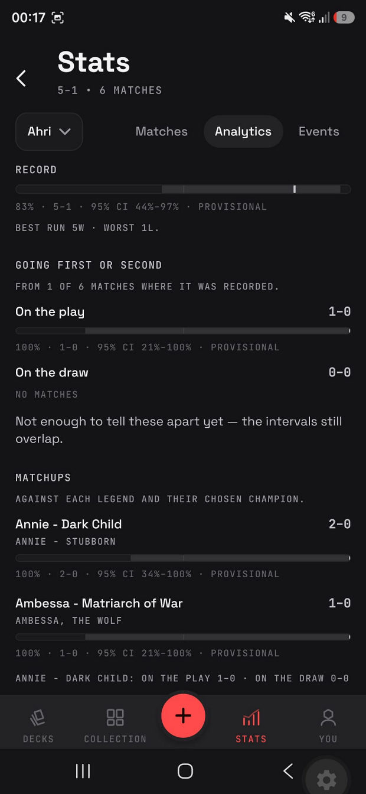
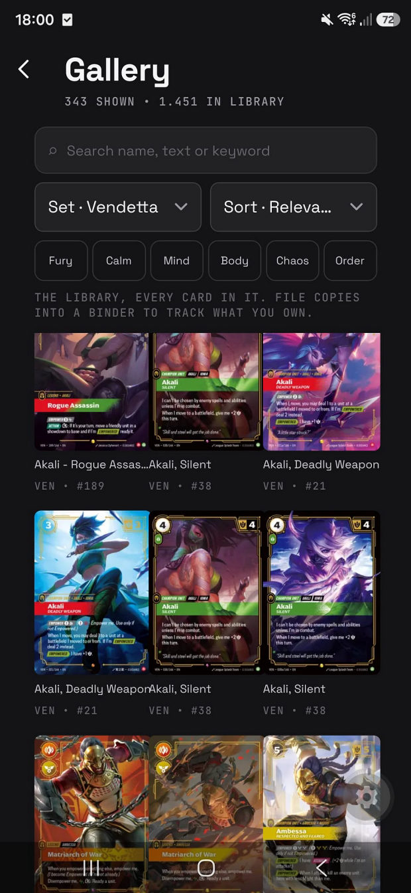
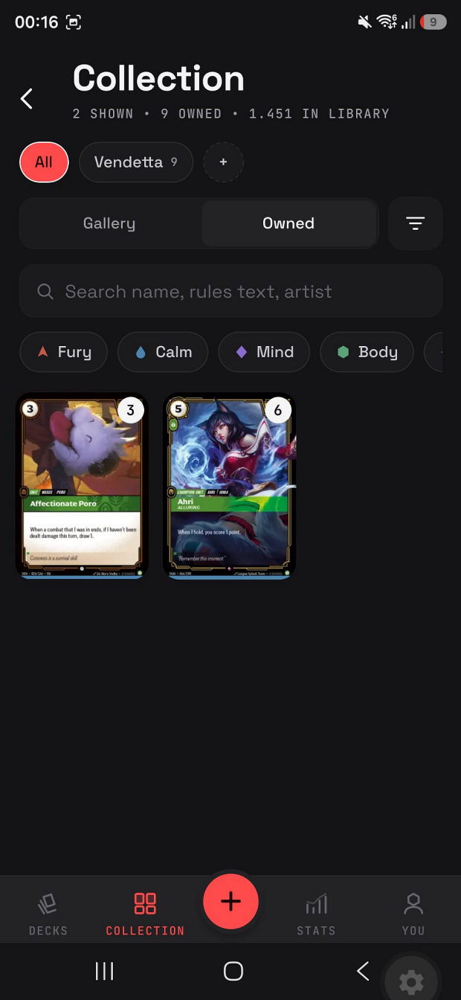

Your decks
Every deck, with its record attached
Each deck shows its Legend, its current version and how it has actually performed. A deck is not a static list here — it accumulates a history.
Unofficial fan project · Riftbound
A deck and match tracker for Riftbound played with physical cards — built around the one question a card database can't answer.

You play thirty games with a deck. You swap four cards. You play forty more. Did the swap actually help?
Rifthall treats a deck as a living object with a version history. Every game is bound to the exact decklist that played it — so the app can show a deck's whole record, each version's own record, and the precise card diff between them.
A tracker for tabletop play. You build a deck, you play in person, you record what happened — and the app keeps each result attached to the list that produced it.

Each deck shows its Legend, its current version and how it has actually performed. A deck is not a static list here — it accumulates a history.

Log a game against a version and that list is frozen. Editing forks a new version and shows exactly what changed — here, one card swapped for another across five matches. Past results always belong to the list that actually played them.

One record for the deck overall, and one for every version underneath. This is the comparison the app is for — and it only means anything because results were never allowed to drift off the list that earned them.

The result is the only thing required. Opponent Legend, play or draw, battlefields, per-game detail, event and notes are all optional. It is built to take under ten seconds, because a tracker nobody fills in is worthless.

Win rates come with sample size and a confidence interval, and small samples are marked provisional. When two versions can't yet be told apart the app says so in plain words rather than declaring a winner. All of it is one player's own record of their own games.

Every card, searchable by name and rules text, filterable by set, domain, type, rarity and cost. It works with no connection at all — which matters at a table in a shop.

Track your collection and see what a decklist is missing before you build it — not to buy anything through the app, which sells nothing, but to know what is actually playable.
Card images are Riot's own files, served unmodified from Riot's content delivery network. Card text is displayed verbatim in official English and is never translated, in any of the app's languages.
Catalogue data currently comes from a community-run source, and is being migrated onto Riot's official Riftbound Content API.
Feature complete · preparing for release
Every feature shown above is built and running as a signed release build, verified on real hardware. What remains before launch is the store listing, the release pipeline, and the catalogue migration.